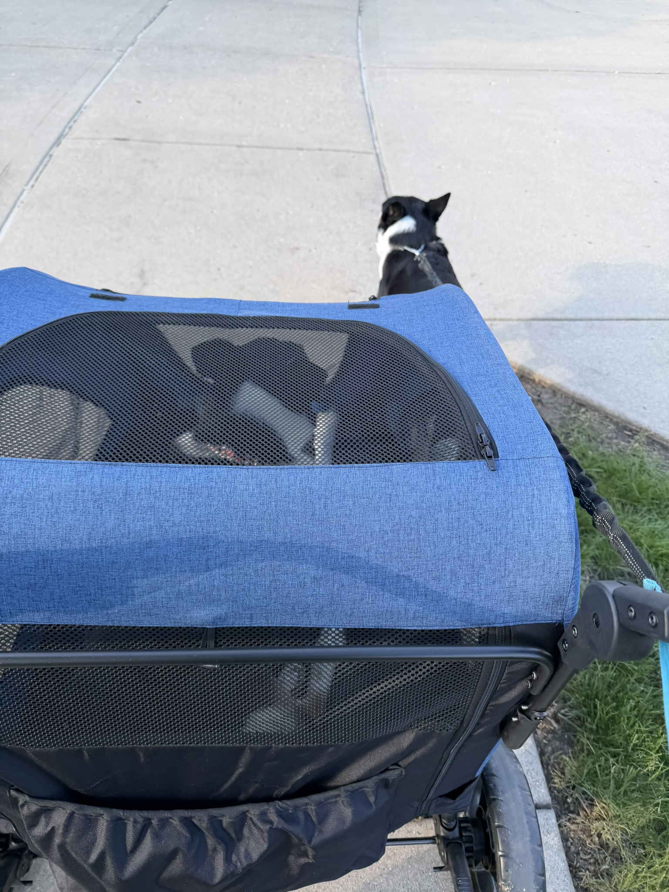
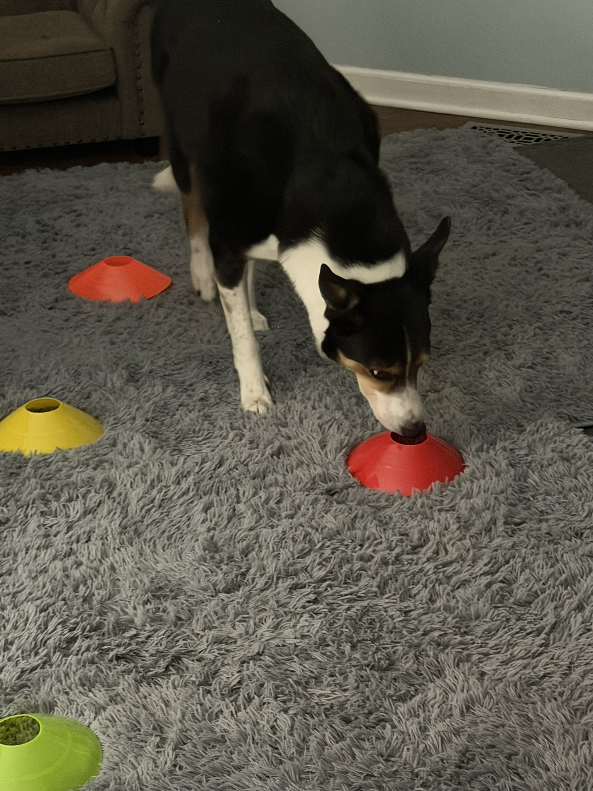

Participation before distance
The stroller let Oliver join outings while limiting the amount he had to walk.
That preserved routine without pretending he was ready for a full normal walk.
WALKING & ACTIVITY
For me, the hardest transition was not from no walking to walking. It was moving from constant protection toward controlled rehabilitation without letting fear make every decision.
This page describes Oliver's experience. It is not an activity schedule. Walking distance, pace, surfaces, swimming, and progression should follow your own veterinarian's or surgeon's instructions.
THE MOST IMPORTANT DISTINCTION
Oliver often looked capable of more before I felt ready to allow more. That created two separate questions that were easy to blur together:
Real-world activity gave me useful information about his strength and confidence, but it did not replace formal clearance. That became especially important at the lake, where Oliver looked increasingly like himself while still needing firm boundaries around high-impact movement.
THE STROLLER WAS A BRIDGE
Early in recovery, I used a stroller so Oliver could join our walks without having to cover the full distance on his healing leg.
That mattered because walks were part of normal life for both dogs. Leaving Oliver home every time Baxter went out would have protected his leg, but it also would have removed the sights, smells, neighborhood activity, and time together that he enjoyed.
The stroller let me separate participation from physical workload. Oliver could still be part of the outing while I controlled how much walking he actually did.
I never saw the stroller as the destination. It was a temporary way to preserve normal life while his activity was restricted.

PARTICIPATION WITHOUT THE FULL WORKLOAD
The front-facing stroller photo shows Oliver enjoying the outing. This view shows the larger reason I used it: he could still move through the neighborhood with us while Baxter continued walking ahead.
Oliver was not being removed from normal life. I was separating participation from the amount of physical work his healing leg had to do.

WHAT I WATCHED
A dog can look enthusiastic outside and still show later that the activity was too much. I needed to look beyond the moment when Oliver wanted to keep going.
I also tried not to turn every small difference into a conclusion. Videos helped because they preserved what I was seeing and made comparison easier than memory alone.
WHAT PROGRESSION LOOKED LIKE FOR US
The stroller let Oliver join outings while limiting the amount he had to walk.
That preserved routine without pretending he was ready for a full normal walk.
Bathroom trips and allowed leash movement gave me repeated chances to observe balance, weight-bearing, pace, and confidence.
The goal was not to test his limit. It was to see how he handled the activity already allowed.
Home movement, neighborhood walks, travel, and the lake placed different demands on him.
A dog may look steady in a hallway and behave very differently around water, family, toys, or a favorite dock.
Oliver increasingly acted ready to participate. I remained cautious because I knew one bad movement could matter.
Rehabilitation required me to notice when protection was still necessary and when my own fear was beginning to hold him back.
Around July 16, approximately six weeks after surgery, I let Oliver walk on our regular walk instead of using the stroller.
The focus was shifting from simply preventing injury toward rebuilding muscle and normal function.
More walking did not mean unrestricted jumping, running, sharp turning, or automatic return to every favorite activity.
Progress in one area did not erase the need for restrictions in another.

WHEN PHYSICAL EXERCISE WAS LIMITED
Oliver was spending long periods in the recovery pen without the physical outlets he was used to. I used simple scent-based enrichment with training cones to give him a job that did not depend on running, jumping, or covering distance.
This was owner-directed enrichment, not a veterinary rehabilitation exercise. I still needed to keep the activity within the movement limits we had been given.
THE LAKE CHANGED MY CONFIDENCE
We went to White Lake from July 10 through July 13, approximately five weeks after surgery. The trip included travel, outdoor time, visiting, movement around the property, and controlled retrieving from the beach.
Over several days, Oliver moved much more than he had during our tightly managed routine at home. I later estimated that the general walking, playing, and visiting added up to a few miles.
He handled the trip without the kind of obvious setback I had feared. Watching that gave me new confidence in what he could manage.
But the lake was not medical clearance. It was evidence of real-world capacity. I still prevented dock jumping and continued to separate the things he appeared able to do from the things I was willing or authorized to allow.
ONE THING THAT WORKED BETTER THAN TRAINING OLIVER
Oliver loves jumping from the dock. During the lake trip, he repeatedly went back to it when someone was preparing to throw.
I called him back to the beach and asked everyone not to throw from the dock. Everyone listened.
That mattered because the safest plan did not depend on Oliver resisting one of his strongest habits while excited. It depended on the people around him removing the cue and opportunity that made the dangerous choice more likely.
Sometimes changing the environment—or the people—is more reliable than expecting the recovering dog to make the right decision every time.
THE SIX-WEEK SHIFT
On July 16, I let Oliver walk on the regular walk instead of putting him in the stroller.
The lake trip had changed both of us. Oliver seemed more confident in his body, and I had seen him handle several days of ordinary movement without an obvious setback.
I realized I had probably been more conservative than his later performance suggested he needed. At approximately six weeks after surgery, I believed it was time to begin focusing more intentionally on activity and rebuilding muscle.
That was an interpretation based on what I was observing, not a general six-week rule for other dogs. The exact walking distance, pace, formal recheck findings, and medical clearance still matter.
WHAT I WOULD DO AGAIN
I would still use the stroller as a temporary bridge. It let Oliver remain part of our routine without requiring him to complete the whole walk.
I would still use videos, watch the later response, and keep high-impact boundaries in place even when he looked strong.
I would also still let real experience change my understanding. The lake trip showed me that Oliver had progressed beyond the narrow version of recovery I had built around him at home.
WHAT I WOULD HANDLE MORE DELIBERATELY
WHAT THIS PAGE CANNOT ANSWER
Oliver's recovery, temperament, prior activity, home environment, and veterinary plan were his own. Another dog may need a different level of restriction or a different progression.
What this experience can offer is a way to think about the transition: preserve participation when possible, observe the response over time, keep medical limits separate from apparent ability, and recognize that owner confidence may need rehabilitation too.
THE NEXT QUESTION
Oliver's strongest noise trigger collided directly with his orthopedic restrictions. The safest place for his anxiety was downstairs, while stairs were one of the movements I was trying to limit.